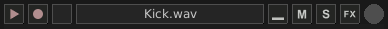
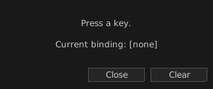

In this tutorial we are going to use Giada as a sample player by loading samples into channels and binding keyboard buttons to them. So the first thing to do is to find some nice samples to play: a drum kit sample pack can be a good candidate, for example.
Suppose you have a drum audio file, say Kick.wav: select it in the operating system's file browser and drag it over an empty column in Giada. This will create a new sample channel already filled with your sound and ready to play. You can also drag and drop multiple files at once.
Alternatively, you can create an empty sample channel first and then load it with the audio file. Click on the Edit column button on top of any column, then select Add Sample channel from the drop-down menu: a new empty sample channel will appear in the selected column. Now click on the channel main button, highlighted below:

Select Load new sample... from the drop-down menu. A file browser window will appear: select the file you want to load (say Kick.wav) and then click the Load button when you're done. The sample channel will now look like this:

Rinse and repeat for all the samples you want to load.
Click on the channel main button again, and select Setup keyboard input.... from the drop-down menu. A new window will pop up:

Press the key on your keyboard you want to bind to the selected channel, then click the Close button when done. Click Clear instead to reset the binding. The channel will look like this:
The keyboard button that has been bound to the channel is displayed next to the sample name.
You are now ready to launch samples by pressing the corresponding key on your keyboard. New sample channels have the play mode set to One-shot basic by default, as seen in the picture below:
This mode allows you to trigger a sample as soon as the bound key is pressed. You may also want to experiment with other single shot modes, by clicking the button outlined in the picture above and select an option from the drop-down menu. For example:
One-shot press — the channel plays as long as its key is pressed;
One-shot retrig — the first keypress starts the channel; a second keypress (while playing) rewinds it. Perfect fit for drumming;
One-shot endless — the channel plays in loop forever; pressing its key stops it. Good for layering up multiple sounds.